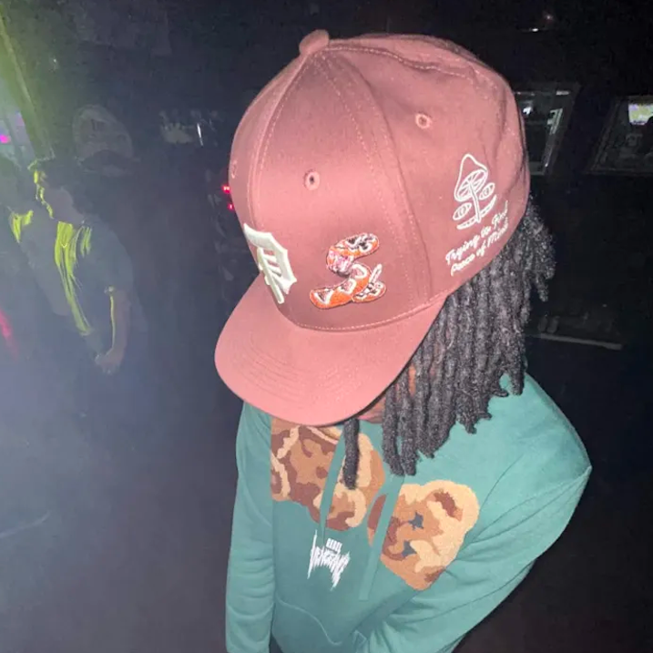

jayys
Member since March 1, 2026 •
Biography
jayys is a rapper and singer hailing from Chicago, Illinois. Drawing heavy inspiration from artists like Earl Sweatshirt, MIKE, and JPEGMAFIA, he built the foundation of his career in the abstract and experimental hip-hop scene, cultivating his sound across four distinct projects.
With the release of disquiet, jayys officially ushered in a new sonic era. Looking to the future, he is currently expanding his creativity by diving into music production and visual art.